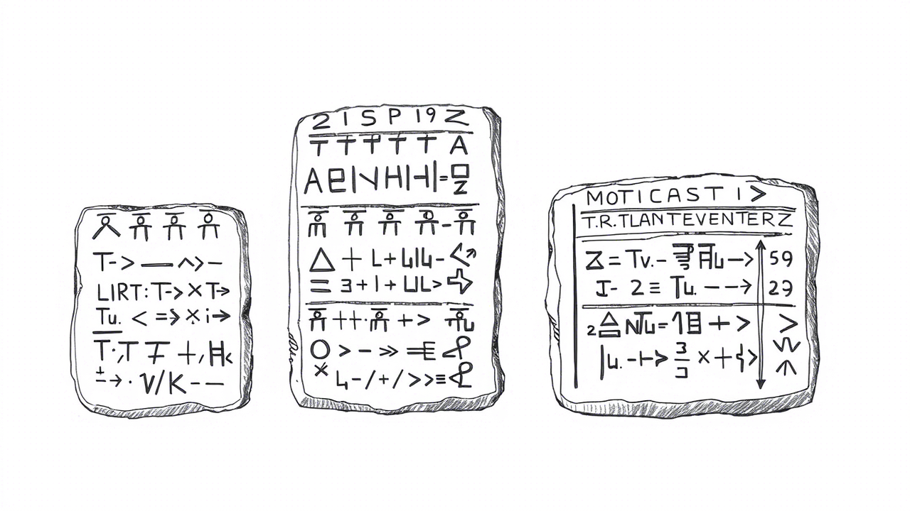
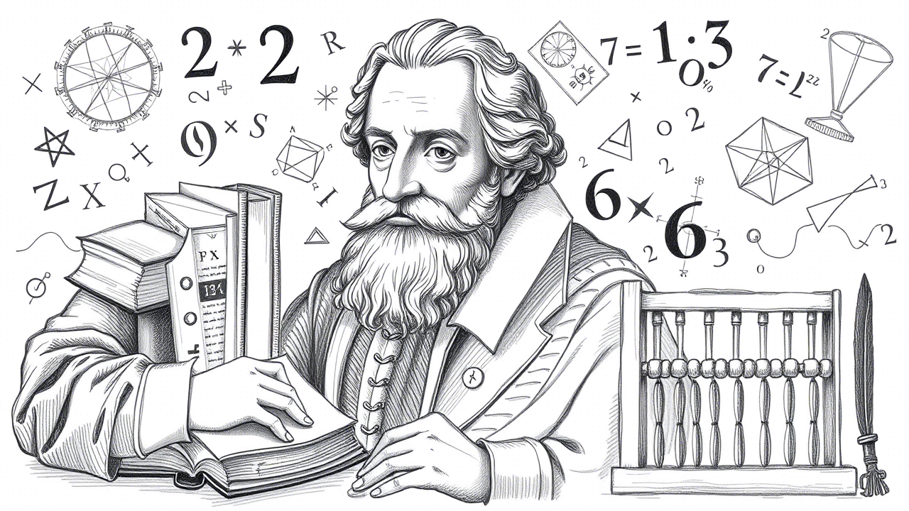
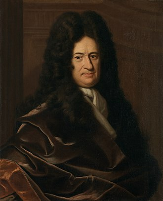
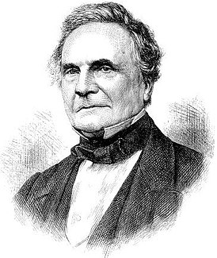

Лекция 1. Понятие алгоритма. Свойства алгоритмов. Способы записи алгоритмов.
Автоматизация юридических процессов. Алгоритмика.
Цели и задачи
- Раскрыть сущность основных понятий, связанных с алгоритмами, их свойствами и способами записи.
- Сформировать представление о способах анализа задачи и формулирования последовательности действий для их решения.
- Развить навыки аналитического мышления при разработке алгоритмов.
- Показать важность алгоритмов в различных областях науки, техники и повседневной жизни, а также продемонстрировать, как они могут быть представлены в разных формах.
- Воспитывать внимательность, точность и дисциплину при работе с алгоритмами.
Рассматриваемые вопросы
- Понятие алгоритма.
- История понятия алгоритма.
- Числовые и логические алгоритмы.
- Алгоритмы в юридических процессах и правовых нормах.
- Свойства алгоритмов.
- Принципы разработки алгоритмов.
- Методы разработки алгоритмов.
- Основные этапы решения задачи.
- Тестирование алгоритма.
- Способы записи алгоритмов.
- Правила оформления схем алгоритмов.
- Единая система программной документации в соответствии с ГОСТ 19.701-90.
Понятие алгоритма
Алгоритм — это последовательность чётко определённых, конечных и логически упорядоченных шагов, направленных на решение конкретной задачи или достижение определённой цели.
Алгоритмы лежат в основе математики, информатики, программирования и многих других дисциплин. Они позволяют формализовать процесс преобразования входных данных в выходные, гарантируя корректный результат при соблюдении условий.
Пример алгоритма рассмотрения жалобы гражданина
- Шаг 1. Прием документа.
- Шаг 2. Проверка подведомственности.
- Шаг 3. Назначение ответственного лица.
- Шаг 4. Сроки рассмотрения (30 дней).
- Шаг 5. Формирование ответа.
Структура алгоритма
- Ввод данных: Получение исходной информации (например, числа, текст, сигналы).
- Обработка данных: Выполнение операций: вычисления, сравнения, ветвления, циклы.
- Вывод результата: Предоставление итоговых данных (например, отсортированный список, решение уравнения).
История понятия алгоритма
Понятие алгоритма имеет многовековую историю. От вавилонских глиняных табличек до квантовых компьютеров алгоритмы эволюционировали, отражая развитие человеческого мышления.
От клинописных табличек до GPT-4 история алгоритмов — это история поиска порядка в хаосе. Сегодня алгоритмы управляют финансами, правосудием и даже творчеством, но их суть остаётся неизменной: четкая инструкция для достижения цели.
Понимание их истории помогает не только создавать новые технологии, но и осознанно использовать их в правовом и социальном контексте.
Вавилонские алгоритмы (1800–1600 до н.э.)
Вавилоняне использовали алгоритмы для решения многих практических задач.

- Расчеты с процентами на глиняных табличках.
- Алгоритм извлечения квадратного корня (метод Герона, позже описанный греками).
Древняя Греция
Евклид (ок. 300 г. до н.э.)
Древнегреческий математик, геометр, автор первого из дошедших до нас теоретических трактатов по математике.
Евклид в «Началах» формализовал алгоритм нахождения НОД (наибольшего общего делителя):
алг НОД(a, b)
нач
пока b <> 0
t := b
b := a mod b
a := t
кон
вывод a
конИсламский Золотой век
Мухаммада ибн Муса аль-Хорезми (ок. 780–850)
Персидский или среднеазиатский учёный IX века из Хорезма, математик, астроном, географ и историк.
- первым рассматривал алгебру как самостоятельную дисциплину и преподавал ее в элементарной форме;
- разработал подробные тригонометрические таблицы;
- в своих трудах детально описывал пошаговые методы решения уравнений;
- в Европе его имя (латинизированное «Algorithmi») стало основой термина «алгоритм».
Средневековая Европа: XII–XIII века
Фибоначчи (Леонардо Пизанский)(ок. 1170–1240)
Итальянский математик, стоявший у истоков европейской математической революции.
- познакомил Европу с арабскими цифрами (0–9), заменившими римские;
- разработал методы расчета прибыли, конвертации валют и решения практических задач для купцов;
- популяризировал алгоритмы для коммерческих расчетов;
- ввел в рассмотрение числовой ряд, где каждое число — сумма двух предыдущих: 0, 1, 1, 2, 3, 5, 8, 13…

Раймонд Луллий (1235–1315)
Каталонский миссионер, поэт, философ и теолог, один из наиболее влиятельных и оригинальных мыслителей европейского высокого Средневековья.
- считается одним из родоначальников европейской арабистики и комбинаторики;
- одним из первых применил диаграмму связей;
- создал механическое устройство для генерации логических комбинаций (прообраз алгоритмического мышления).
Новое время: формализация и универсальность
Готфрид Лейбниц (21.06.1646–14.11.1716)
Немецкий философ, логик, математик, механик, физик, юрист, историк, дипломат, изобретатель и языковед.
Основатель и первый президент Берлинской академии наук, член Лондонского королевского общества (1673), иностранный член Французской академии наук.
- независимо от Ньютона создал математический анализ;
- создал комбинаторику как науку;
- заложил основы математической логики;
- описал двоичную систему счисления с цифрами 0 и 1.

Чарльз Бэббидж (26.12.1791–18.10.1871)
Английский математик, считающийся предвестником современных компьютеров.
Иностранный член-корреспондент Императорской академии наук в Санкт-Петербурге (1832). Написал труды по теории функций, механизации счёта в экономике.

- создал первый механический калькулятор для автоматизации расчётов математических таблиц;
- разработал первую в истории концепцию программируемого компьютера с арифметическим устройством, памятью и использованием перфокарт для ввода данных.
Ада Лавлейс (10.12.1815–27.11.1852)
Английский математик, первая в истории программист. Дочь поэта Джорджа Байрона, но воспитывалась матерью, которая поощряла её интерес к науке. В 1833 году познакомилась с Чарльзом Бэббиджем, создателем концепции Аналитической машины — прообраза компьютера.
- написала первый алгоритм для вычисления чисел Бернулли — это считают первой компьютерной программой;
- разработала алгоритм для вычисления чисел Бернулли с помощью машины Бэббиджа, ставший первой в мире программой;
- предсказала, что вычислительные устройства смогут работать не только с числами, но и с символами, музыкой и искусством.
XX век: математизация и компьютерная революция
Машина Тьюринга
Алан Тьюринг формализовал алгоритм как последовательность действий, выполняемых абстрактной машиной. Его работа заложила основы теории вычислений.
Пример алгоритма для машины Тьюринга:
Задача: Инвертировать биты (0→1, 1→0).
Правила:
- Если состояние Q1 и символ 0: пиши 1, двигайся вправо, оставайся в Q1.
- Если состояние Q1 и символ 1: пиши 0, двигайся вправо, оставайся в Q1.1950-е: Языки программирования
- FORTRAN (1957) и ALGOL (1958) сделали алгоритмы доступными для массовой разработки.
- Алгоритмы сортировки (например, быстрая сортировка Хоара, 1960) стали классикой Computer Science.
XXI век: алгоритмы как новая реальность
Big Data и машинное обучение
- Алгоритмы PageRank (Google) и нейросетей (DeepMind) изменили подход к обработке информации.
- Пример: алгоритм рекомендаций Netflix использует матричную факторизацию для предсказания предпочтений.
Этические вызовы
- Дискриминация алгоритмов: в 2016 г. система COMPAS (США) была обвинена в расизме при оценке риска рецидива.
- GDPR в ЕС (2018) регулирует автоматизированное принятие решений, требующее «человеческого надзора».
Числовые и логические алгоритмы
Числовые и логические алгоритмы — это два основных типа алгоритмов, которые используются для решения различных задач в информатике и математике.
Числовые и логические алгоритмы играют важную роль в различных областях науки и техники.
Понимание их различий и сходств позволяет эффективно применять их в зависимости от конкретных задач и требований.
Числовые алгоритмы
Числовые алгоритмы используются для выполнения расчетов, связанных с количественными данными. Такие алгоритмы могут включать в себя арифметические операции, вычисления, обработку числовых данных и т.д. Они помогают юристам и судам принимать решения на основе точных вычислений.
Примеры:
- Определение размера алиментов, которые родитель должен выплачивать на содержание ребенка.
- Определение суммы компенсации, которую работодатель должен выплатить за просрочку зарплаты.
- Определение суммы неустойки за нарушение условий договора (например, просрочка поставки товара).
- Определение суммы штрафа за конкретное нарушение ПДД.
- Определение суммы компенсации при ДТП.
Логические алгоритмы
Логические алгоритмы основаны на последовательности логических операций (например, «если-то», «и», «или») и помогают систематизировать процесс рассуждений. В юриспруденции они используются для анализа условий, проверки соответствия нормам права и принятия решений на основе заданных правил.
Примеры:
- Определение статьи Уголовного кодекса РФ, по которой следует квалифицировать деяние.
- Определение, соответствует ли договор требованиям законодательства.
- Выбор суда, который должен рассматривать дело.
- Определение порядка разрешения трудового спора.
- Определение наличия оснований для освобождения от уголовной ответственности.
- Определение права на налоговый вычет.
Сравнение числовых и логических алгоритмов
Сходства
- Оба типа алгоритмов могут быть реализованы в различных языках программирования.
- Оба могут использоваться для решения задач и оптимизации процессов.
- Оба типа алгоритмов могут быть комбинированы для решения более сложных задач.
Различия
- Числовые алгоритмы фокусируются на числовых данных и их обработке, тогда как логические алгоритмы работают с логическими выражениями и условиями.
- Числовые алгоритмы часто требуют более сложных математических вычислений, в то время как логические алгоритмы больше ориентированы на принятие решений и управление потоком выполнения программы.
Алгоритмы в юридических процессах и правовых нормах
Алгоритмы в юридических процессах и правовых нормах играют все более важную роль в современном правоприменении и правосудии. Они могут использоваться для автоматизации различных аспектов юридической работы, включая анализ документов, предсказание исходов дел, а также для поддержки принятия решений.
Алгоритмы могут значительно улучшить эффективность юридических процессов, но их использование должно быть тщательно продумано и регулировано, чтобы обеспечить соблюдение правовых норм и защиту прав граждан.
Автоматизация рутинных задач
Алгоритмы могут помочь в автоматизации таких задач, как обработка юридических документов, составление контрактов и управление делами. Это позволяет юристам сосредоточиться на более сложных и творческих аспектах своей работы.
Анализ данных
С помощью алгоритмов можно анализировать большие объемы юридических данных, выявлять закономерности и тенденции, что может быть полезно для подготовки к судебным разбирательствам или для разработки правовой стратегии.
Предсказание исходов дел
Некоторые алгоритмы могут использоваться для предсказания вероятности успеха в судебных разбирательствах на основе анализа предыдущих дел и решений судов. Это может помочь юристам и их клиентам принимать более обоснованные решения.
Поддержка принятия решений
Алгоритмы могут быть интегрированы в системы поддержки принятия решений, которые помогают судьям и адвокатам оценивать различные варианты действий и их последствия.
Этика и правовые нормы
Внедрение алгоритмов в юридическую практику также поднимает важные этические и правовые вопросы. Необходимо учитывать, как алгоритмы могут влиять на справедливость, прозрачность и доступность правосудия. Важно, чтобы алгоритмы были разработаны с учетом правовых норм и принципов, чтобы избежать предвзятости и дискриминации.
Свойства алгоритмов
Дискретность
Алгоритм должен представлять процесс решения задачи как упорядоченное выполнение некоторых простых шагов. При этом для выполнения каждого шага алгоритма требуется конечный отрезок времени, то есть преобразование исходных данных в результат осуществляется во времени дискретно.
Детерминированность (определённость)
В каждый момент времени следующий шаг работы однозначно определяется состоянием системы. Таким образом, алгоритм выдаёт один и тот же результат (ответ) для одних и тех же исходных данных.
Существуют вероятностные алгоритмы, в которых следующий шаг работы зависит от текущего состояния системы и генерируемого случайного числа. Однако при включении метода генерации случайных чисел в список «исходных данных» вероятностный алгоритм становится подвидом обычного.
Понятность
Алгоритм должен включать только те команды, которые доступны исполнителю и входят в его систему команд.
Конечность
Алгоритм должен завершаться за конечное количество шагов. Это означает, что он не должен зацикливаться и должен иметь четко определенные условия завершения.
Массовость (общность)
Алгоритм применим к множеству однотипных задач, а не к одной конкретной. Например, алгоритм сортировки работает для любого набора чисел.
Результативность
Алгоритм должен завершаться определенным результатом (или сообщением об отсутствии решения).
Эффективность
Алгоритм должен быть эффективным как по времени, так и по использованию ресурсов. Это означает минимизацию количества операций и использование оптимальных структур данных.
Проверяемость
Алгоритм должен быть проверяемым, что означает возможность тестирования его корректности и эффективности. Это может включать в себя создание тестовых случаев и использование методов верификации.
Принципы разработки алгоритмов
Современная юридическая практика всё чаще требует работы с алгоритмами — от анализа договоров до прогнозирования судебных решений.
Принципы разработки алгоритмов являются основой для создания качественных и эффективных решений.
Соблюдение этих принципов помогает разработчикам создавать алгоритмы, которые не только решают поставленные задачи, но и делают это оптимальным образом.
Даже простые алгоритмы на школьном языке помогают юристам: - Избегать арифметических ошибок в расчетах. - Стандартизировать проверку документов. - Соблюдать процессуальные сроки.
Важно: Все алгоритмы должны сверяться с актуальными редакциями законов.
Четкость и детерминированность
Каждый шаг алгоритма должен быть однозначным и не допускать разночтений.
Пример: Алгоритм проверки дееспособности клиента:
алг ПроверкаДееспособности
нач
ввести Возраст, РешениеСуда
если Возраст >= 18 и РешениеСудаоНеедеспособности = "отсутствует" то
вывод "Дееспособен"
иначе
вывод "Требуется опекун"
все
конЭффективность
Алгоритм должен решать задачу за минимальное время и с разумными затратами ресурсов.
Пример: Поиск судебного прецедента по ключевым словам:
алг НайтиПрецедент
нач
ввести КлючевыеСлова
для каждого дела в БазеДанных
если дело.Текст содержит КлючевыеСлова то
вывод дело.Номер
все
кон
конМодульность
Разделяйте алгоритм на независимые блоки (модули). Это упрощает тестирование и повторное использование кода.
Пример: Проверка договора аренды на соответствие ФЗ № 123:
алг ПроверитьДоговорАренды
нач
ПроверитьСтороны()
ПроверитьСрок()
ПроверитьОплату()
коналг ПроверитьСрок
нач
ввести СрокДоговора
если СрокДоговора > 5 лет то
вывод "Требуется регистрация в Росреестре"
все
конКорректность
Алгоритм должен давать правильный результат для всех возможных входных данных, включая исключения из правил.
Пример: Расчет неустойки за просрочку платежа (ст. 395 ГК РФ).
алг РасчетНеустойки
нач
ввести СуммаДолга, СтавкаЦБ, ДниПросрочки
если ДниПросрочки > 0 то
Неустойка = СуммаДолга * (СтавкаЦБ / 100) * (ДниПросрочки / 365)
вывод "К уплате: ", Неустойка
иначе
вывод "Просрочки нет"
все
конПростота и читаемость
Избегайте избыточной сложности. Алгоритм должен быть понятен даже без комментариев даже новичкам. Используйте говорящие названия переменных и избегайте сложных конструкций.
- Непонятные названия переменных (
а,б,0вместо логических значений). - Нет пояснения, что проверяется.
алг ПР1
нач
ввод а, б
если а >= 18 и б = 0 то
вывод "ДА"
иначе
вывод "НЕТ"
все
конЮридическая проверка дееспособности:
- Названия переменных прямо указывают на их смысл.
- Условие соответствует ст. 21 ГК РФ.
- Результат содержит юридически значимую формулировку.
алг ПроверкаДееспособности
нач
ввести Возраст, СтатусНедееспособности // Статус: 0 — дееспособен, 1 — недееспособен
если Возраст >= 18 и СтатусНедееспособности == 0 то
вывод "Лицо дееспособно: договор действителен"
иначе
вывод "Требуется согласие опекуна или суда"
все
конАдаптивность
Алгоритм должен легко модифицироваться при изменении условий.
Пример: После изменения НДС с 20% до 22%:
алг РасчетНДС
нач
// Раньше: Ставка = 20
Ставка = 22
ввести Сумма
НДС = Сумма * Ставка / 100
вывод НДС
конТестируемость
Разрабатывайте алгоритм так, чтобы каждый этап можно было проверить.
Пример: Тест для алгоритма раздела имущества (ст. 38 СК РФ)**:
алг РазделИмущества
нач
ввести СтатусИмущества
если СтатусИмущества = "совместное" то
вывод "Раздел 50/50"
иначе
вывод "Имущество не делится"
все
конТест-кейсы:
- Статус = “совместное”. Ожидаемый результат: “50/50”
- Статус = “наследство”. Ожидаемый результат: “не делится”
Прозрачность (интерпретируемость результатов)
Алгоритм должен позволять объяснить результат (важно для GDPR и ФЗ-152).
Пример: Отказ в кредите с указанием причины:
алг ПроверкаКредита
нач
ввести КредитнаяИстория, Зарплата
если КредитнаяИстория = "плохая" то
вывод "Отказ: плохая кредитная история"
иначе если Зарплата < 20000 то
вывод "Отказ: недостаточный доход"
иначе
вывод "Одобрено"
все
конМетоды разработки алгоритмов
Методы разработки алгоритмов предоставляют разработчикам инструменты и техники для создания эффективных решений.
Эти методы могут варьироваться в зависимости от сложности задачи, требований к производительности и других факторов. Рассмотрим основные методы разработки алгоритмов.
Выбор подходящего метода зависит от конкретной задачи, требований к производительности и других факторов.
Понимание различных методов разработки алгоритмов позволяет разработчикам более эффективно решать задачи и оптимизировать свои решения
Метод «разделяй и властвуй»
Метод «разделяй и властвуй» заключается в разбиении сложной задачи на более простые подзадачи, которые решаются независимо друг от друга. После решения подзадач результаты комбинируются для получения окончательного решения. Примеры алгоритмов, использующих этот метод, включают быструю сортировку и алгоритм Краскала для нахождения минимального остовного дерева.
Итеративный метод
Итеративный метод основывается на повторении определенных шагов до достижения желаемого результата. Этот подход часто используется в численных методах, таких как метод Ньютона для нахождения корней уравнений. Итеративные алгоритмы могут быть более эффективными в некоторых случаях, чем рекурсивные.
Рекурсивный метод
Рекурсия — это метод, при котором функция вызывает саму себя для решения подзадачи. Данный подход часто используется для решения задач, которые могут быть разбиты на более мелкие аналогичные задачи, таких как вычисление факториала или обход деревьев. Важно учитывать, что рекурсивные алгоритмы могут потребовать больше памяти из-за хранения контекста вызовов.
Жадный метод
Жадные алгоритмы принимают локально оптимальные решения на каждом шаге с надеждой, что это приведет к глобально оптимальному решению. Этот метод часто используется в задачах оптимизации, таких как задача о рюкзаке или алгоритмы для нахождения минимального остовного дерева.
Динамическое программирование
Динамическое программирование — это метод, который используется для решения задач, которые могут быть разбиты на перекрывающиеся подзадачи. Он сохраняет результаты уже решенных подзадач, чтобы избежать повторных вычислений. Этот метод часто применяется в задачах, связанных с оптимизацией, таких как задача о наибольшей общей подпоследовательности.
Алгоритмы перебора
Алгоритмы перебора (или «грубой силы») исследуют все возможные варианты решения задачи. Хотя этот метод может быть неэффективным для больших наборов данных, он может быть полезен для небольших задач или в случаях, когда другие методы не применимы.
Метод проб и ошибок
Этот метод включает в себя экспериментирование с различными подходами и анализ результатов. Он может быть полезен в ситуациях, когда нет четкого понимания структуры задачи или когда требуется интуитивный подход к решению.
Основные этапы решения задачи
Разработка и реализация алгоритма для решения задачи включает в себя несколько ключевых этапов, которые помогают структурировать процесс и обеспечить эффективность конечного решения.
Следование этим этапам помогает разработчикам структурировать процесс, минимизировать ошибки и оптимизировать конечный продукт.
Понимание и применение этих этапов в практике разработки алгоритмов способствует улучшению качества и надежности программного обеспечения.
Рассмотрим основные этапы решения задачи при разработке алгоритма.
Анализ задачи
На этом этапе необходимо тщательно изучить условия задачи, определить ее цели и требования. Важно понять, какие данные доступны, какие результаты ожидаются и какие ограничения могут существовать. Анализ задачи помогает сформулировать четкое представление о том, что необходимо достичь.
Определение входных и выходных данных
После анализа задачи следует определить, какие данные будут входными (например, параметры, которые алгоритм будет принимать) и какие данные будут выходными (результаты, которые алгоритм должен возвращать). Четкое определение входных и выходных данных помогает избежать недоразумений и упрощает дальнейшую разработку.
Разработка алгоритма
На этом этапе происходит непосредственное создание алгоритма. Разработчик выбирает подходящие методы и техники, основываясь на анализе задачи и определении данных. Алгоритм может быть представлен в виде псевдокода, блок-схемы или другого формата, который позволяет четко описать последовательность шагов.
Тестирование и отладка
После разработки алгоритма необходимо провести его тестирование. Это включает в себя проверку корректности работы алгоритма на различных входных данных, а также выявление и исправление возможных ошибок. Тестирование помогает убедиться, что алгоритм работает так, как задумано, и соответствует требованиям задачи.
Оценка эффективности
На этом этапе важно оценить эффективность алгоритма с точки зрения времени выполнения и использования ресурсов. Разработчик может провести анализ сложности алгоритма, чтобы понять, насколько он оптимален для решения поставленной задачи. Если алгоритм неэффективен, может потребоваться его доработка или выбор другого метода.
Документирование
Создание документации является важным этапом, который часто упускается из виду. Документация должна содержать описание алгоритма, его входных и выходных данных, а также примеры использования. Это поможет другим разработчикам понять алгоритм и использовать его в своих проектах.
Поддержка и обновление
После внедрения алгоритма в систему важно обеспечить его поддержку и обновление. Это может включать в себя исправление ошибок, улучшение производительности или адаптацию к изменяющимся требованиям. Поддержка алгоритма помогает сохранить его актуальность и эффективность на протяжении времени.
Тестирование алгоритма
Тестирование алгоритмов — это важный этап в процессе разработки, который позволяет убедиться в корректности и эффективности алгоритма.
Оно включает в себя проверку работы алгоритма на различных входных данных, выявление ошибок и оценку его производительности.
Следование систематическому подходу к тестированию, включая разработку тестовых случаев, автоматизацию и оценку производительности, позволяет разработчикам создавать надежные и высококачественные алгоритмы.
Рассмотрим основные аспекты тестирования алгоритмов.
Цели тестирования алгоритмов
Основные цели тестирования алгоритмов включают: - Проверка корректности: Убедиться, что алгоритм возвращает правильные результаты для всех возможных входных данных. - Выявление ошибок: Найти и исправить ошибки, которые могут возникнуть в процессе выполнения алгоритма. - Оценка производительности: Измерить время выполнения и использование ресурсов, чтобы определить, насколько алгоритм эффективен.
Подходы к тестированию
Существует несколько подходов к тестированию алгоритмов: - Модульное тестирование: Проверка отдельных компонентов алгоритма на корректность. Это позволяет изолировать ошибки и упростить процесс отладки. - Интеграционное тестирование: Проверка взаимодействия различных компонентов алгоритма. Это важно для выявления проблем, которые могут возникнуть при совместной работе нескольких частей. - Системное тестирование: Полное тестирование алгоритма в контексте всей системы, чтобы убедиться, что он работает корректно в реальных условиях.
Тестовые случаи
Для эффективного тестирования необходимо разработать тестовые случаи, которые охватывают различные сценарии использования алгоритма. Тестовые случаи могут включать: - Обычные случаи: Стандартные входные данные, для которых алгоритм должен работать корректно. - Граничные случаи: Входные данные, находящиеся на границах допустимых значений, чтобы проверить, как алгоритм справляется с крайними условиями. - Некорректные данные: Входные данные, которые не соответствуют ожидаемым требованиям, чтобы убедиться, что алгоритм обрабатывает ошибки корректно.
Автоматизация тестирования
Автоматизация тестирования может значительно упростить процесс и повысить его эффективность. С помощью автоматизированных тестов можно быстро проверять алгоритм на различных входных данных и выявлять ошибки. Это особенно полезно при внесении изменений в алгоритм, так как позволяет быстро убедиться, что новые изменения не нарушили его работу.
Оценка производительности
Помимо проверки корректности, важно также оценить производительность алгоритма. Это включает в себя: - Анализ временной сложности: Оценка времени выполнения алгоритма в зависимости от размера входных данных. - Анализ пространственной сложности: Оценка объема памяти, который использует алгоритм.
Документация результатов тестирования
Документация результатов тестирования является важным аспектом, который помогает команде разработчиков понять, какие тесты были проведены, какие ошибки были выявлены и как они были исправлены. Это также может быть полезно для будущих разработок и улучшений алгоритма.
Способы записи алгоритмов
Запись алгоритмов — это важный аспект разработки, который позволяет четко и однозначно представить последовательность действий для решения задачи.
Выбор способа записи алгоритма зависит от целей разработки, аудитории и сложности задачи.
Понимание различных способов записи алгоритмов помогает разработчикам эффективно коммуницировать свои идеи и создавать качественные решения.
Существует несколько способов записи алгоритмов, каждый из которых имеет свои преимущества и недостатки.
Рассмотрим основные способы записи алгоритмов.
Псевдокод
Псевдокод — это способ записи алгоритма с использованием простого и понятного языка, который не привязан к конкретному языку программирования. Он позволяет описать логику алгоритма в виде последовательности шагов, используя обычные слова и конструкции. Преимущества псевдокода включают: - Легкость понимания: Псевдокод понятен даже тем, кто не знаком с конкретным языком программирования. - Гибкость: Можно использовать любые конструкции, которые помогают лучше объяснить алгоритм.
Блок-схемы
Блок-схемы — это графическое представление алгоритма, где каждый шаг представлен в виде блока, а связи между шагами — стрелками. Блок-схемы позволяют визуально отобразить логику алгоритма и его структуру. Преимущества блок-схем включают: - Наглядность: Легко увидеть общую структуру алгоритма и его последовательность. - Удобство для презентации: Блок-схемы хорошо подходят для демонстрации алгоритма другим людям.
Язык программирования
Алгоритм можно записать непосредственно на языке программирования, который будет использоваться для его реализации. Это позволяет сразу увидеть, как алгоритм будет работать в коде. Преимущества записи на языке программирования: - Точность: Код на языке программирования является точным и может быть сразу выполнен. - Возможность тестирования: Можно сразу протестировать алгоритм на практике.
Таблицы
Таблицы могут использоваться для представления алгоритмов, особенно когда необходимо показать взаимосвязи между данными или состояниями. В таблицах можно описать входные данные, выходные данные и шаги алгоритма.
Преимущества таблиц: - Удобство для представления больших объемов данных. - Легкость в сравнении различных вариантов алгоритма.
Формальные нотации
Существуют формальные нотации, такие как нотация Бэкуса-Наура (BNF) или другие математические формализмы, которые используются для описания алгоритмов и языков программирования.
Преимущества формальных нотаций: - Точность: Формальные нотации обеспечивают строгую и однозначную запись. - Подходят для теоретических исследований и анализа.
Правила оформления схем алгоритмов
Оформление схем алгоритмов — это важный аспект документации в программировании, позволяющий четко и однозначно представить структуру и логику работы алгоритма.
В России правила оформления документации для программного обеспечения и алгоритмов регламентированы стандартами, в частности, ГОСТ Р 19.701-90 «Единая система программной документации. Схемы алгоритмов».
Соблюдение правил оформления схем алгоритмов в соответствии с ГОСТ 19.701-90 играет важную роль в создании программной документации.
Оно обеспечивает универсальность, понятность и точность передачи информации о разработанных алгоритмах, что способствует эффективному взаимодействию между разработчиками, тестировщиками и другими заинтересованными сторонами.
Рассмотрим основные положения и требования этого ГОСТа.
Основные положения ГОСТ 19.701-90
Цель схемы алгоритма
- Схемы предназначены для визуального представления алгоритмов, применяемых в программных системах. Они помогают разработчикам и другим заинтересованным сторонам понять логику работы алгоритма.
Общие требования
- Схемы должны быть четкими и легко читаемыми. Используемые символы и обозначения должны быть понятны и стандартны.
- Оформление схемы должно способствовать интуитивному пониманию алгоритма, избегая излишнего нагромождения элементов.
Структура алгоритмической схемы
- Начало и конец: Используются овалы для обозначения начала и конца алгоритма.
- Действия и операции: Прямоугольники представляют собой операции (например, присваивание, вычисление и т.д.).
- Случаи и условия: Ромб фиксирует условия и ветвления алгоритма, позволяя обозначить различные потоки выполнения в зависимости от условия.
- Соединения: Стрелки направляют поток управления между блоками и показывают последовательность выполнения.
Унификация символов
- В соответствии с ГОСТ, утверждена унифицированная система символов, которую необходимо использовать при оформлении схем. Это позволяет стандартизировать документацию, делая её более доступной для понимания.